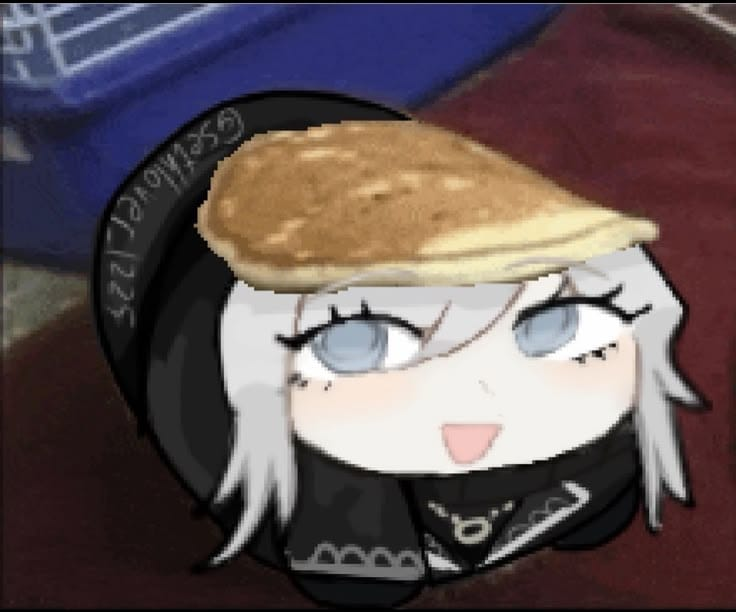
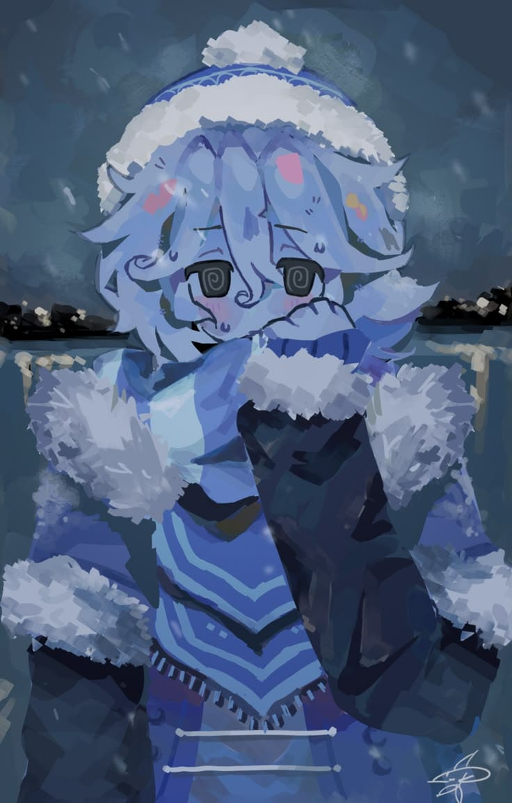

Home
Profile
Gallery
|
⫶☰ Article |
Guestbook
|
|
||||
|---|---|---|---|---|---|
|
🏠︎ Home |
✦ Profile |
▩ Gallery |
|
✎ Guestbook |
|
Hobi ku :D |
Saya telah memainkan beberapa game yang saya anggap menarik dan menghibur, baik dari segi gameplay, cerita, maupun gaya seni.
Project moon memiliki gaya seni yang sangat unik, sebuah gaya seni yang tidak takut untuk menjadi berani dan tajam, kotor dan gelap dalam pasar
dalam pasar di mana sebagian besar game berusaha untuk menjadi ramah dan mudah dicerna. Cerita dari Limbus Company unik karena
itu adalah cerita tentang karakter-karakter dan pertempuran mereka dengan masa lalu, seringkali berjuang dengan filsafat dan apa yang dibutuhkan untuk menjadi lebih baik dan melanjutkan perjalanan dengan game yang praktis dirancang di sekitar karakter-karakter ini.
Dan mekanik judi yang keduanya berfungsi sebagai penjelasan dalam lore tentang bagaimana Sinners mampu bertransformasi menjadi versi-versi mereka yang berbeda dan gameplay mereka yang memiliki GAMBLING!!!🎰🎰🎰🎰🎰🎰🎰
|
Aku suka menggambar. Dulu, saya selalu ingin menggambar—terutama karena terdorong untuk menuangkan karakter-karakter yang saya ciptakan dalam imajinasi dan lamunan saya. Namun,
biasanya setelah 2 atau 3 minggu, saya berhenti menggambar dan kembali menjadi CHUD. Sejujurnya, saya sangat ingin meningkatkan kemampuan menggambar saya. Saat ini, saya berusaha
untuk konsisten menggambar kira-kira setiap dua hari sekali, karena jadwal saya sedang sangat padat dan hampir tidak ada waktu luang.
⋘●⩌●⋙
Character sheets favorit kuh😋 Saya suka membuat character sheets untuk karakter-karakter saya, itu adalah cara yang menyenangkan untuk menunjukkan karakter-karakter saya dan desain mereka.
Saya biasanya membuat character sheets untuk karakter-karakter yang saya buat di kepala saya dan beberapa di antaranya berasal dari game-game yang telah saya mainkan. Saya juga suka membuat character sheets untuk
karakter-karakter yang saya sukai dari media lain. Membuat character sheets adalah cara yang menyenangkan untuk menunjukkan karakter-karakter saya dan desain mereka.
|
  Gambar dari Pinterest |
@ 2026 Michael Vanho Adrian. Hak cipta dilindungi undang-undang.